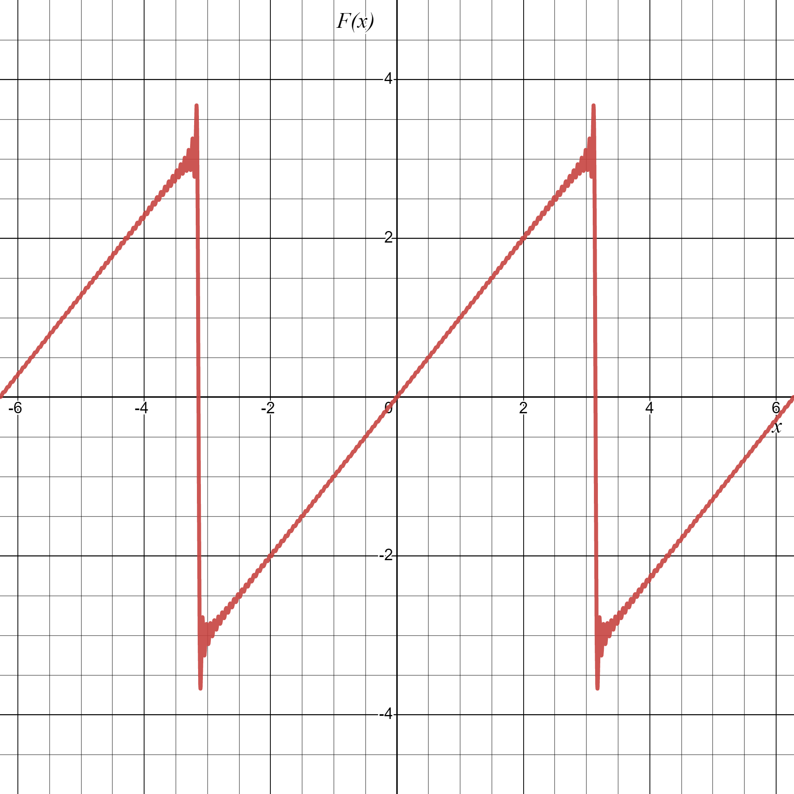

Advanced Calculus L6
- Odd and even extensions
- Fourier series of functions of general period
- Examples
Periodic extensions
- FS calculations for an odd or even function are greatly simplified
- Given a function $f$ defined on $(0,L)$ we would like to obtain a FS expansion in terms of either just sines or cosines
- We can do this by extending the function $f$ to be even/odd on the interval $(-L,L)$ and then extending to a $2L$-periodic function

Since \[ -f(-x) = -\cos(2x)e^x \] we have that \[ f_\mathrm{oe}(x) = \begin{cases}\cos(2x)e^{-x},&x\in(0,\pi)\\ -\cos(2x)e^x,& x\in (-\pi, 0) \end{cases} \] which after extending periodically looks like...

Since \[ f(-x) = \cos(2x)e^x \] we have that \[ f_\mathrm{ee}(x) = \begin{cases}\cos(2x)e^{-x},&x\in(0,\pi)\\ \cos(2x)e^x,& x\in (-\pi, 0) \end{cases} \] which after extending periodically looks like...

Even extension:
\[f_\mathrm{ee} = \begin{cases}f(x)&x\in(0,L)\\f(-x)& x\in(-L,0)\end{cases}\]
Odd extension:
\[f_\mathrm{ee} = \begin{cases}f(x)&x\in(0,L)\\-f(-x)& x\in(-L,0)\end{cases}\]
Advanced Calculus L6
- Odd and even extensions
- Fourier series of functions of general period
- Examples
Functions of any period
- Consider a function of period $T=2L$
- For example
- We would like to represent such functions as a FS consisting of terms like \[ \color{#FF33F9}{\boxed{\color{white} \cos\left(\frac{n\pi}{L}x\right) ~\text{ and }~ \sin\left(\frac{n\pi}{L}x\right) }} \]

- Note that the example over slide holds more generally, i.e. if $f(x)$ is $2L$-periodic then $g(X)$ is $2\pi$-periodic
- To see this note that \[ \begin{align*} g(X+2\pi) &= f\left(\frac{L(X+2\pi)}{\pi}\right)\\ &= f\left(\frac{LX}{\pi}+2L\right)=f\left(\frac{LX}{\pi}\right)=g(X) \end{align*} \]
- Since $g(X)$ is $2\pi$-periodic we have its FS: \[ \color{#FF33F9}{\boxed{\color{white} g(X) = \frac{a_0}{2}+\sum_{n=1}^\infty\left[a_n\cos(nX)+b_n\sin(nX)\right] }} \]
Advanced Calculus L6
- Odd and even extensions
- Fourier series of functions of general period
- Examples
Solution: We need the odd extension to compute the sine series (i.e. a FS consisting of sines only)
And \[ \begin{align*} b_n &=\frac{1}{\pi}\int_{-\pi}^\pi F(x)\sin(nx)\mathrm{d}x\\ &= \frac{2}{\pi}\int_0^\pi f(x)\sin(nx)\mathrm{d}x\\ &= \frac{2}{\pi}\int_0^\pi x\sin(nx)\mathrm{d}x\\ &=\frac{2}{\pi}\bigg[-\frac{x}{n}\cos(nx)\bigg]_0^\pi+\frac{2}{n\pi}\int_0^\pi \cos(nx)\mathrm{d}x\\ &= \frac{2}{n\pi}\left(-(-1)^n\right) = \color{red}{\boxed{\color{white}\frac{2}{n\pi}(-1)^{n+1}}} \end{align*} \]
100 terms of the FS: 
Solution: We need the even extension to compute the cosine series (i.e. a FS consisting of cosines only)

Thus \[ a_0 = \frac{2}{L}\int_0^L x\mathrm{d}x = \frac{2}{L}\bigg[\frac{1}{2}x^2\bigg]_0^L = \color{red}{\boxed{\color{white}L}} \] And \[ \begin{align*} a_n &=\frac{2}{L}\int_0^L x\cos\left(\frac{n\pi}{L}x\right)\mathrm{d}x\\\\ &= \frac{2}{L}\bigg[\frac{L}{n\pi}x\sin\left(\frac{n\pi}{L}x\right)\bigg]_0^L- \frac{2}{n\pi}\int_0^L\sin\left(\frac{n\pi}{L}x\right)\mathrm{d}x\\ &= \ldots \end{align*} \]
100 terms of the FS ($L=5$):
Lecture 6 Review
- In this lecture we covered
- Odd and even extensions
- Fourier series of functions of general period
- After this lecture you should
- be able to able to compute the odd/even extension of a function
- be able to compute Fourier series of functions of any period